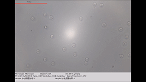
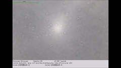
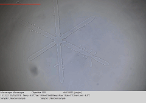

Wei Liu
I am a researcher in cryobiology and bioengineering, with interests in cell cryopreservation, vitrification, biobanking, and low-temperature injury mechanisms. My work focuses on developing safer and more effective cryopreservation strategies for clinically relevant cells and tissues, including human T lymphocytes, mesenchymal stem cells, and related biomedical samples.
Recent Projects


Simulation and visualization of the response of human T cells under different cooling rates.

Visualization of the growth process of a single ice crystal under low-temperature conditions.
Talks
Research
I am interested in developing freezing protocols for different types of biosamples, including human T lymphocytes, umbilical cord mesenchymal stem cells, and umbilical cord tissues.
Research Papers
- Review of the Mechanism of Intracellular Ice Formation
Wei Liu, Mingwei Guo, Zhiyu Guo, Baolin Liu
Journal of Refrigeration (in Chinese) 2018/06/1 | paper - Impacts of trehalose and l-proline on the thermodynamic nonequilibrium phase change and thermal properties of normal saline
Wei Liu, Zhiyong Huang, Xiaowen He, Pei Jiang, Xiaoyue Huo, Zekang Lu, Baolin Liu
Cryobiology 2020/10/1 | paper - Investigating solution effects injury of human T lymphocytes and its prevention during interrupted slow cooling
Wei Liu, Zhiyong Huang, Baolin Liu, Xiaowen He, Suxia Xue, Xiaojuan Yan, Ganesh K Jaganathan
Cryobiology 2021/4/1 | paper - Optimization of UC-MSCs cold-chain storage by minimizing temperature fluctuations using an automatic cryopreservation system
Yanhong Xu, Leo Li-Ying Chan, Siye Chen, Bi Ying, Ting Zhang, Wei Liu, Hao Guo, Jianxin Wang, Zhifeng Xu, Xuebing Zhang, Xiaowen He
Cryobiology 2021/4/1 | paper - Cryopreservation of human T lymphocytes under fast cooling with controlled ice nucleation in cryoprotective solutions of low toxicity
Zhiyong Huang, Wei Liu, Baolin Liu, Xiaowen He, Hao Guo, Suxia Xue, Xiaojuan Yan, Ganesh K Jaganatha
Cryobiology 2021/12/1 | paper - Slow Cooling and Controlled Ice Nucleation Enabling the Cryopreservation of Human T Lymphocytes with Low-Concentration Extracellular Trehalose
Zhiyong Huang, Wei Liu, Tianhua Ma, Honglian Zhao, Xiaowen He, Baolin Liu
Biopreservation and Biobanking 2022/8/1 | paper
Education
Awards
No. Visitor Since Aug 2025. Powered by w3.css